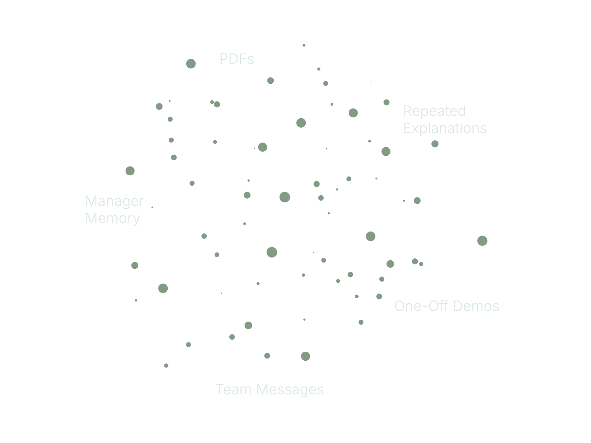
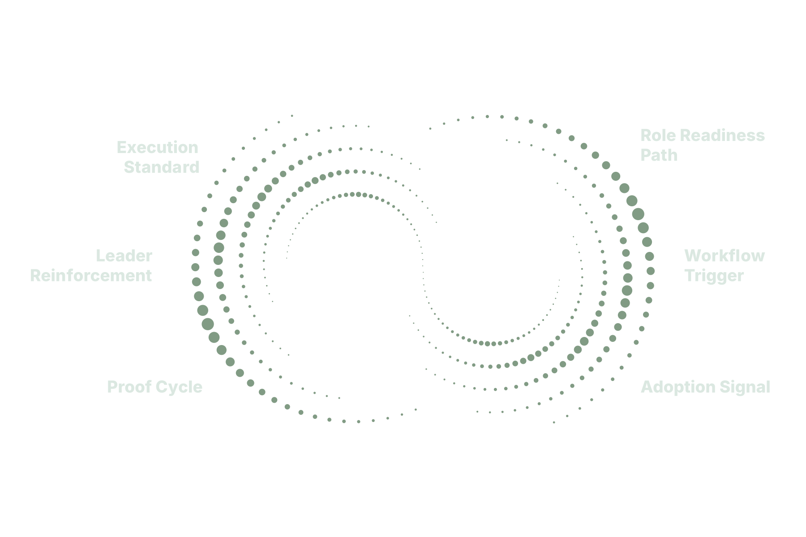

Your best work should not live in someone's head.
Make it repeatable.
FISCH builds training systems for growing teams. We turn internal expertise into practical training, tools, and manager support so people know what good looks like and do the work more consistently.
From Know-How to System
From scattered know-how to repeatable execution.
Scattered Know-How

Repeatable System

The Cost of Inconsistency
Growth gets expensive when the work depends on memory.
- Slow onboarding
- Repeated questions
- Manager drag
- Process drift
- Rework
- Uneven customer experience
- Low confidence
- No clear proof of improvement
START WITH THE PROBLEM
What are you trying to make repeatable?
- Onboarding New hires depend on whoever is training that day. FISCH builds the training, tools, and manager support around the work.
- Process adoption People complete training but still do it the old way. FISCH builds the training, tools, and manager support around the work.
- Manager consistency Different managers explain and reinforce the work differently. FISCH builds the training, tools, and manager support around the work.
- Expertise capture Your best employee knows how it works, but no one else does. FISCH builds the training, tools, and manager support around the work.
What FISCH Builds
Training alone is not the system.
Repeatable work needs training, tools, and reinforcement working together.
- Training Explain the work.
- Tools Support the work.
- Reinforcement Make the work stick.
Ways to Work
Start with the system your team needs most.
- Training System Audit Find where training, onboarding, process adoption, or manager reinforcement is breaking down.
- Custom Training System Build Build the training, tools, and reinforcement system around a role, process, initiative, or capability.
- Training Systems CoE Ongoing enablement, content updates, manager support, and system improvement.
What do you want to make repeatable?
Tell me what keeps getting re-explained, where people are inconsistent, or what process needs to stick.
Or email hello@fisch.life